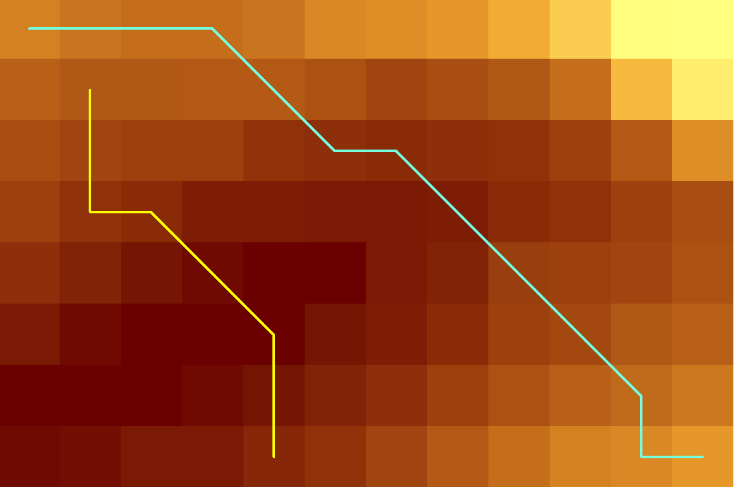
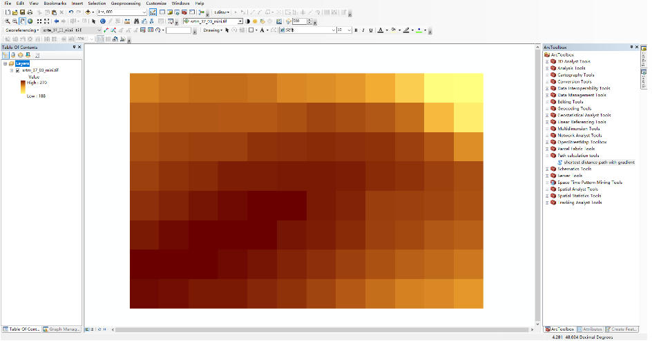
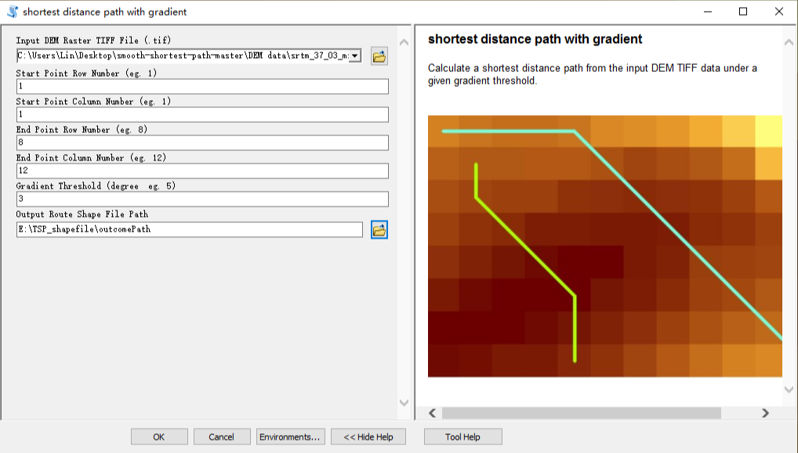
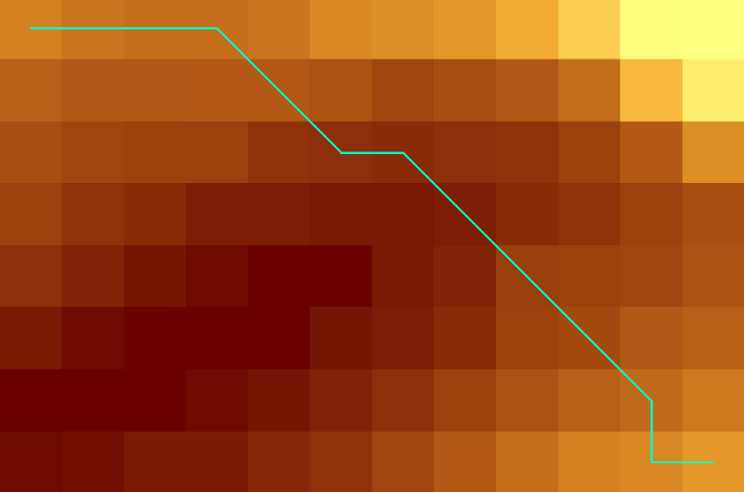

Demand
As known to us all, there are many terrific, well-developed shortest path algorithms. However, in reality, there are always more factors need to be taken into consideration. For instance, when a railway route is being planned and designing before construction, the route between the departure point and destination not only needs to be short but also need to be “smooth” which means the whole route need to be constantly under a certain gradient so the train could run safely.
This algorithm is designed to solve this kind of problems.
Algorithm description
The basic idea is adding a gradient constraint to the Dijkstra algorithm.
The data is a TIFF DEM raster image containing the geographic coordinates and elevation.
The output is a polyline shapefile (.shp) if it exists.
Implementation and challenges
1. Abstract DEM TIFF to graph
The shortest path algorithm should be implemented in a graph. My workflow is:
a. Transfer TIFF raster to a numpy array
b. Each cell has 8 connecting nodes except cells around the border (validation). [3 *3] mask.
c. The transform from raster to an array will lose the geographic coordinates information. So deriving a coordinates array for distance comparison is necessary. (using Haversine formula)
2. Break condition of the Loop
If there is no gradient constraint, the break condition could be all the cells are visited and the algorithm outputs global shortest paths for every pair of points in this graph.
Since taking the gradient into consideration, you can not know if the start point or end point will be visited or not. So you cannot know how the final visited array would look like then there is no way to break the loop. (I still cannot think of a good way of finding the shortest path for every pair of points in the graph).
Fortunately, in our case, I only need to find the shortest path for the given pair of points. It would make the condition much easier and more effective.
The condition is when the endpoint is visited the loop can break, also even the endpoint is not visited but there is no node can be visited, break! which means that based on the given start and end point and the gradient threshold there is no path meet the requirement of the user. Give an error message to inform the user to try other parameters.
3. Time and space complexity
by changing the break condition to if find the endpoint improved the efficiency of this algorithm a little bit. However, due to the 2-dimension searching and the characteristic of the geographic path the time complexity of this algorithm is still O(n^2).
Any advice about improving this algorithm is more than welcomed.
Input data
STRM DEM TIFF image

Arctool box
shortest distance path with gradient

Output
shortest distance path with gradient shape file(.shp)

Download Arctool box
Download Source code
Visit the project on my github